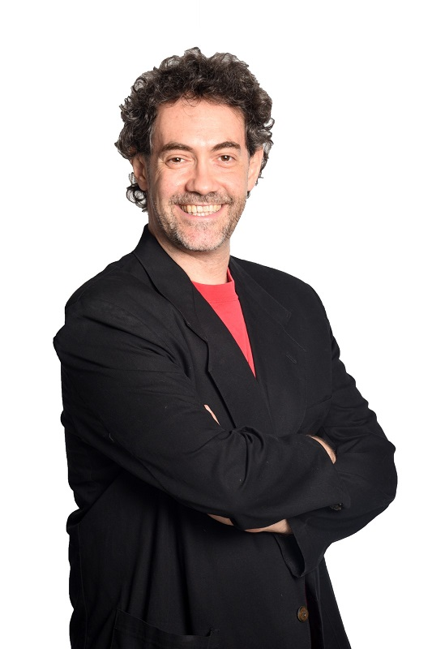

Quien es Pablo Coca
Actor, improvisador y comediante de Stand Up. Amante del libreto propio, sea guionado o improvisado, como herramienta para contar las cosas que quiere contar. Como comediante de Stand Up se formó en el 2004 con Diego Wainstein y y fué uno de los primeros en crear su propio unipersonal, Misiles de Palabras (también en el 2004). Participó también en televisión en los populares programas Bendita Tv y Hora de Reir. Recientemente estrenó su último unipersonal “Muñopedro” en Taburete Club de Comedia. Se presenta habitualmente en los principales clubes de comedia de Buenos Aires. Actualmente se encuentra próximo a estrenar su próximo espectáculo “Coca vs Coca”, con el cual planea presentarse tanto en Buenos Aires como en otras ciudades de Argentina. Como improvisador, formó parte del elenco profesional de los Match de Improvisación de Mosquito Sancineto de 1998 a 2003, con quien además participó en el espectáculo Improvisación Registrada. Fundó el grupo Stereotipos, junto a Ernesto Zuazo, con el cual llevaron la improvisación a la radio, a través del programa Stereotipos en el Aire, y luego al teatro ciego, con el espectáculo Stereotipos a Ciegas. Fue uno de los pioneros en llevar también la improvisación a el mundo de los eventos (sociales y corporativos) con los grupos Los del Arbol e ImproConcert (de los cuales también es fundador), con los que realiza presentaciones y capacitaciones desde hace 15 años. Como actor trabajó en el Teatro San Martin en diferentes obras. Otra de sus grandes pasiones es la radio. A los 16 años debutó con programa propio en Emisora del Sol (Mendoza). Luego trabajó en Fm La Tribu, FM Patricios, Radio de las Madres, America, Am del Plata y Radio Splendid.